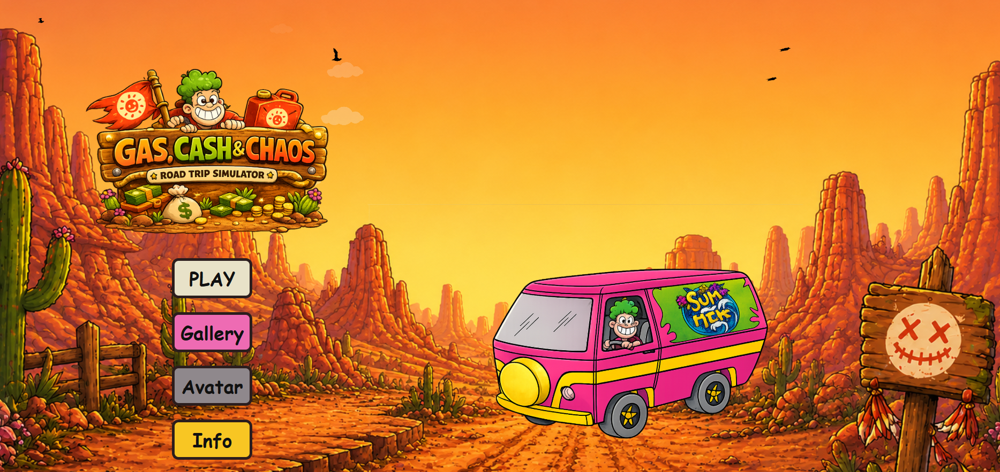
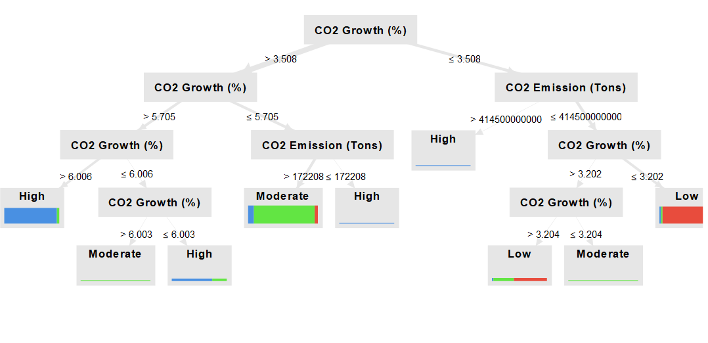
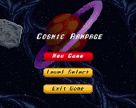
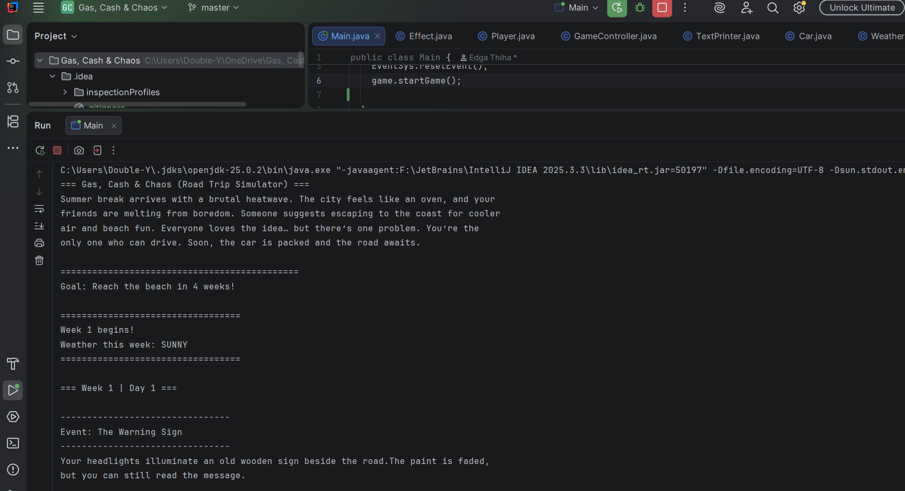

About Me
I am a second-year Information Technology student interested in software engineering and data science. I enjoy developing applications, experimenting with new technologies, and exploring how data can be used to solve problems. I am continuously building my programming and analytical skills through academic and personal projects, while seeking opportunities to gain practical experience and grow as a developer.
Projects

Road-Trip Survival Web Sim
Type: Browser Simulation & Resource App (2026)
A web-based road-trip game tracking six interconnected stats, event triggers, and sheet-driven balance tuning.

Data Mining & Warehousing Suite
Type: ETL & Analytics Pipelines (2026)
Multi-dataset workflows in Python and Altair AI Studio covering prep, feature work, clustering, rules, and models.
Visual Novel: RPG Maker MZ Project
Type: Narrative RPG & Custom Scripts (2026)
An RPG Maker MZ project with custom JavaScript plugins for time-loop rewind logic and persistent state.

2D Arcade Shooter
Type: Unity Action Game (2026)
A fast-paced 2D shooter with player controls, wave spawning, collisions, and UI/game-state flow.

Console Road-Trip Prototype
Type: Java CLI Simulation (2025)
Turn-based console prototype testing resource tracking, random encounters, and branching choices in Java.
Skills
Software & Web
Java, JavaScript, C#, HTML/CSS, SQL, Git, OOP, Web Apps
Data & Modeling
Python, RapidMiner, Altair AI Studio, Data Prep, Linear Regression, Clustering
Game Dev & Design
Unity, RPG Maker MZ, Gameplay Systems, Graphic Design